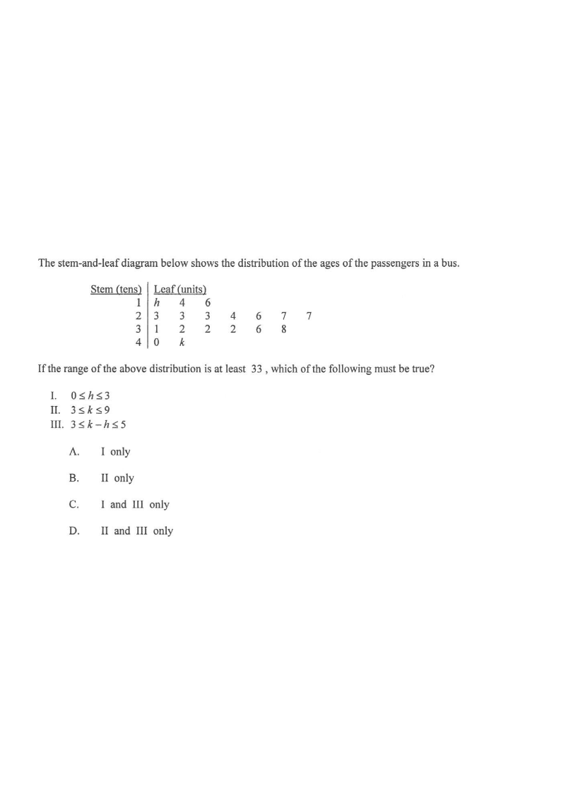

Ages of passengers (units = 1 year, stems = tens)
Highlighted: the stem-and-leaf table.
The stem-and-leaf diagram below shows the distribution of the ages of the passengers in a bus.
| Stem (tens) | Leaf (units) | |
|---|---|---|
| 1 | | | $h$ 4 6 |
| 2 | | | 3 3 3 4 6 7 7 |
| 3 | | | 1 2 2 2 6 8 |
| 4 | | | 0 $k$ |
If the range of the above distribution is at least 33, which of the following must be true?
A. I only B. II only C. I and III only D. II and III only

Every leaf is a single digit, so $h$ and $k$ are digits from $0$ to $9$.
From the diagram: the stem 1 row begins with leaf $h$, so $h\in\{0,1,2,\dots,9\}$.
The stem 4 row contains $0$ and $k$, so $k\in\{0,1,2,\dots,9\}$ as well.
Hint: a leaf repeated across rows is impossible, but here nothing forbids any digit.
Smallest value: $\text{stem }1,\ \text{leaf }h \;\Rightarrow\; 10+h$.
Largest value: $\text{stem }4,\ \text{leaf }k \;\Rightarrow\; 40+k$ (since $4 \ge h$ for the stem 1 row, $40+k$ is always the maximum).
$$\text{Range} = (40+k) - (10+h) = 30 + k - h.$$
Hint: "range = largest − smallest". Compare stems first, then leaves.
$$30 + k - h \ge 33 \quad\Longrightarrow\quad k \ge h + 3.$$
Combine with the digit constraints $0\le h\le 9$ and $0\le k\le 9$:
$$k \ge h+3,\qquad k\le 9.$$
This single inequality is the key to testing I, II and III.
Take $h = 4$. Then $k \ge 7$, and $k = 7 \le 9$ is possible.
So $h = 4$ is a legitimate value — statement I fails (it is not must be true).
A "must be true" claim fails the moment one valid counter-example exists.
From $k \ge h+3$ and $h \ge 0$, we get $k \ge 3$. Also $k \le 9$ since $k$ is a digit.
So $3 \le k \le 9$ — statement II is true.
Take $h = 0$: then $k \ge 3$ and $k\le 9$, so $k-h = k-0 = k$ may be $6, 7, 8$ or $9$.
E.g. $h=0,\ k=9$ gives $k-h=9 > 5$ — statement III fails.
Only $k-h \ge 3$ is forced; the upper bound $5$ is not guaranteed.
Only statement II must be true $\Rightarrow$ answer B.